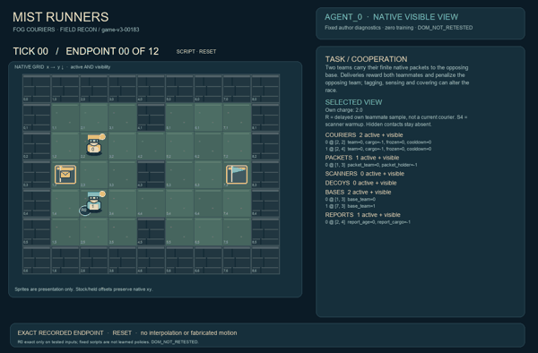
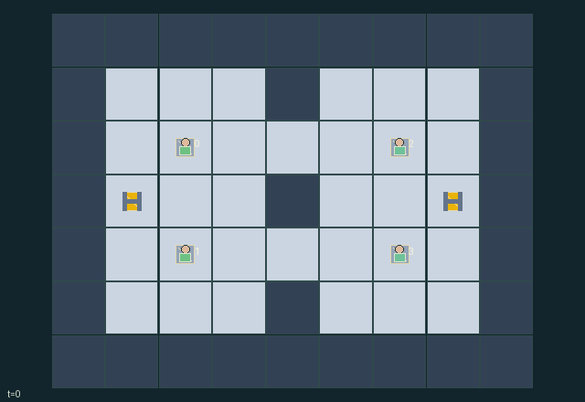

GI183 · Mist Runners

Original recording scope: 角色0实际可见视角 · Mode: 实际诊断回放
Additional generated state replay (different trajectory / full-state debug)

Two teams carry their finite native packets to the opposing base. Deliveries reward both teammates and penalize the opposing team; tagging, sensing and covering can alter the race.
Identity and original contract
4 independently actionable roles; 11 discrete commands per role; 162 native observation columns per role; original horizon 112 steps. Declared per-step reward range: -0.5 to 1. Observation regime: partially_observable.
Source SHA-256: 2ff9049e2a74bd9620bacf42c02884d6ac553d43048039c5fa50fcc13961ebb6
The objective, rewards, population, map and horizon remain original. A preview is not a success claim.
Objective and gameplay
Two teams carry their finite native packets to the opposing base. Deliveries reward both teammates and penalize the opposing team; tagging, sensing and covering can alter the race.
Packets can be picked up, handed off, dropped by simultaneous tags and recovered. Two sensing charges per actor fund warmup scanners or local decoy-jammer cover. Partner radio reports are sampled from the preceding state on even clocks, with explicit age; they do not grant current teammate visibility.
- Two courier teams carry their own finite packet to the opposite base. Adjacent waiting teammates can receive handoffs.
- Tags outside the target's home tile freeze the target in place and drop its real packet; tags resolve simultaneously.
- Each actor has two sensing charges shared by scanners and decoy jammers.
- Scanner life 4 is warmup; life 3, 2 and 1 reveals radius-4 contacts to its team.
- A decoy jams enemy remote scans of friendly agents, packets and scanners within radius 2. Local radius-2 sight still works; the decoy transmitter can itself be scanned.
- Walls block movement, not radial sensing. Only actual visible entities are shown in a role view.
- The separate report marker is an aged teammate sample for that recipient, not a current physical actor.
- Map, bases and delivery announcements are public. Other actors' charges and all unobserved current positions are absent from role HUDs.
- A full-state audit is privileged and must be labeled separately. This scene does not authorize exposing hidden state.
- Actual trajectory replay, device effects and animation remain unexecuted.
Ending: Both packets have been delivered; otherwise horizon 112 ends the contest. Either zero or one delivery at the horizon remains a valid outcome.
What this game explores
Information, sensing & communication: Who knows a fact, when it was measured, and whether it was communicated are separate state variables. Test memory or communication using only the same role-visible evidence.
Joint transport & shared access: Positions, load geometry, occupancy and persistent access constrain whose action can succeed next. Distinguish physical handoff, shared controls and simultaneous force from a cosmetic cooperation label.
Team opposition & interception: Cooperation within a team can coexist with opposition between teams. Preserve team membership, capture and possession rules, and report each team's outcomes instead of assuming a single shared return.
These are questions supported by rule structure, not observed learning effects.
Play it: operating walkthrough
crucibles play --game gi183Keep Python running and open its printed address. Select this game, set a seed and press Create session. The game itself is always English.
Assign a role range to Host with Assign / take over, or Assign all roles. Invite a second participant with Create player invitation, then assign a disjoint subset. Every original role is available.
For every owned role choose a legal command and press Queue. Arrow keys / WASD queue a declared directional action for the current role camera when available. Space or Advance one joint step advances everyone together. Non-directional games use the selectors.
Unqueued roles use the labelled untrained uniform-legal policy. Take over or release roles before the next step without resetting. Full-state debug is privileged and permanently logged; role cameras preserve permissions. Close the session to retain logs. Server restart does not restore sessions.
Complete command reference
IDs and English labels exactly match the manifest. Availability depends on role, resources, location and phase. An available action can still have no productive effect.
0·Wait / receive packet
1·Move north
2·Move east
3·Move south
4·Move west
5·Pick up own team's ground packet underfoot
6·Spend sensing charge to plant scanner with one-transition warmup
7·Spend sensing charge to plant decoy jammer
8·Tag adjacent opponent outside its home safe tile
9·Pass packet to adjacent waiting unfrozen teammate
10·Deliver carried packet at opposing base
Roles and capability identifiers
These original role names describe capabilities, not interchangeable skins. Check each owned role's legal selector before planning handoffs.
agent_0·Courier on team 0
agent_1·Courier on team 0
agent_2·Courier on team 1
agent_3·Courier on team 1
Information and observation permissions
Current entities are visible within Manhattan radius 2 or a same-team active scanner's radius 4. Enemy-team agents, packets and scanners inside their own decoy's radius 2 resist remote scanning but remain locally visible. Decoy transmitters remain detectable by remote scans. Same-team transmitters are team-known. Walls block motion, not radial sensing. Inactive objects are hidden. Reports are visible only to their recipient; only own charge is observed. Map, bases, delivery announcements and scores are public. Raw full state is privileged audit data, never a role-view HUD.
The GIF is full-state debug and may reveal hidden entities or private state. Train on obs[agent], not the picture, state tree or another role's private row. Field slices and visibility are in the original manifest.
Reinforcement-learning integration
import jax
from crucibles_jaxmarl import make
env = make("gi183")
key = jax.random.PRNGKey(0)
key, rk, ak, sk = jax.random.split(key, 4)
obs, state = jax.jit(env.reset)(rk)
actions = env.sample_actions(ak, state)
obs, state, rewards, dones, info = jax.jit(env.step_env)(sk, state, actions)
done = dones["__all__"]Observations are float32 vectors of width 162; actions are scalar int32; masks have 11 entries. Supply all 4 roles each transition. Masked sampling is an engineering reference, not a trained learner.
step_env retains terminal data without reset. step performs outer autoreset and keeps terminal data in info["raw_state"] and info["raw_observation"]. Use dones["__all__"] for episode boundaries; separate completion, failure and time limit in analysis.
JIT or vmap equal identities and shapes. Split independent reset, policy and transition keys. Group different shapes explicitly; do not shrink the population or horizon. Host rendering stays outside training.
Training questions and fair evaluation
Define valid completion from the objective before fitting. Preserve original rewards and also report real deliveries/services, losses, resource state, unresolved episodes and per-role returns. Animation is not a reward signal.
Who knows a fact, when it was measured, and whether it was communicated are separate state variables. Test memory or communication using only the same role-visible evidence.
Positions, load geometry, occupancy and persistent access constrain whose action can succeed next. Distinguish physical handoff, shared controls and simultaneous force from a cosmetic cooperation label.
Cooperation within a team can coexist with opposition between teams. Preserve team membership, capture and possession rules, and report each team's outcomes instead of assuming a single shared return.
Compare memory, communication or centralized critics under matched actor information. Declare critic access; keep actor inputs role-filtered. Match partner/opponent distributions, masks, compute and checkpoint selection. Final tests never enter fitting or selection.
Independent training runs or source-pairing blocks are inferential units; episodes from one policy are not independent training replications. Save hashes, keys, versions, device, time and cost. Negative, zero, failed and indeterminate outcomes are valid. No trained checkpoint or target score is supplied.
Classification and evidence
Overlapping editorial labels are reading aids, not proof of novelty, difficulty, strategic equivalence or learning effects.
- Information, sensing & communication
- Evidence
manifest.task.objective: Two teams carry their finite native packets to the opposing base. Deliveries reward both teammates and penalize the opposing team; tagging, sensing and covering can alter the race.
- Evidence
manifest.task.interaction: Packets can be picked up, handed off, dropped by simultaneous tags and recovered. Two sensing charges per actor fund warmup scanners or local decoy-jammer cover. Partner radio reports are sampled from the preceding state on even clocks, with explicit age; they do not grant current teammate visibility.
- Evidence
manifest.task.observation_access: Current entities are visible within Manhattan radius 2 or a same-team active scanner's radius 4. Enemy-team agents, packets and scanners inside their own decoy's radius 2 resist remote scanning but remain locally visible. Decoy transmitters remain detectable by remote scans. Same-team transmitters are team-known. Walls block motion, not radial sensing. Inactive objects are hidden. Reports are visible only to their recipient; only own charge is observed. Map, bases, delivery announcements and scores are public. Raw full state is privileged audit data, never a role-view HUD.
- Joint transport & shared access
- Evidence
manifest.task.objective: Two teams carry their finite native packets to the opposing base. Deliveries reward both teammates and penalize the opposing team; tagging, sensing and covering can alter the race.
- Evidence
manifest.task.interaction: Packets can be picked up, handed off, dropped by simultaneous tags and recovered. Two sensing charges per actor fund warmup scanners or local decoy-jammer cover. Partner radio reports are sampled from the preceding state on even clocks, with explicit age; they do not grant current teammate visibility.
- Evidence
manifest.task.observation_access: Current entities are visible within Manhattan radius 2 or a same-team active scanner's radius 4. Enemy-team agents, packets and scanners inside their own decoy's radius 2 resist remote scanning but remain locally visible. Decoy transmitters remain detectable by remote scans. Same-team transmitters are team-known. Walls block motion, not radial sensing. Inactive objects are hidden. Reports are visible only to their recipient; only own charge is observed. Map, bases, delivery announcements and scores are public. Raw full state is privileged audit data, never a role-view HUD.
- Team opposition & interception
- Evidence
manifest.task.objective: Two teams carry their finite native packets to the opposing base. Deliveries reward both teammates and penalize the opposing team; tagging, sensing and covering can alter the race.
- Evidence
manifest.task.observation_access: Current entities are visible within Manhattan radius 2 or a same-team active scanner's radius 4. Enemy-team agents, packets and scanners inside their own decoy's radius 2 resist remote scanning but remain locally visible. Decoy transmitters remain detectable by remote scans. Same-team transmitters are team-known. Walls block motion, not radial sensing. Inactive objects are hidden. Reports are visible only to their recipient; only own charge is observed. Map, bases, delivery announcements and scores are public. Raw full state is privileged audit data, never a role-view HUD.
- Evidence
manifest.actions.8: Tag adjacent opponent outside its home safe tile
Source, receipts and preview limits
The additional generated state GIF replays saved untrained legal actions through the original kernel. At most 25 actual endpoints include initial and terminal state; no invented interpolation. It is full-state debug, not the role observation. Where an original scene preview exists, it is displayed first with its own recorded information scope. The two recordings may use different trajectories and views.
Original source, observation slices, manifest and mechanism
Native receipt · Presentation receipt
Engineering passes do not establish learning. Nonzero floating differences remain recorded and undetermined; no new tolerance was introduced. Human scores remain unverified.